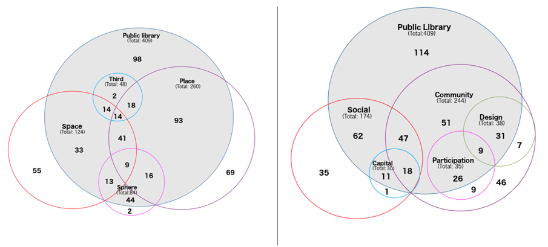
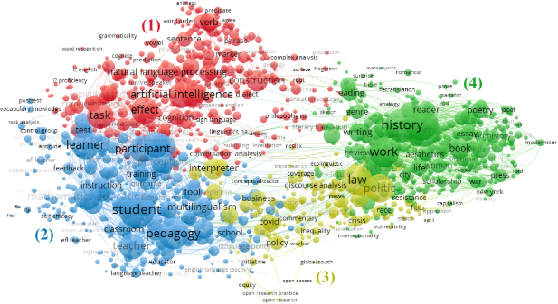
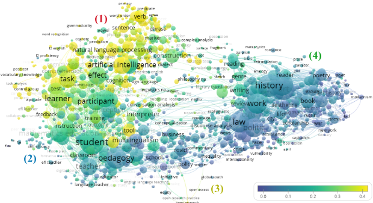

Bloque 4 Búsqueda y selección
Antes de ponernos a buscar, conviene tener claro el objetivo: no se trata de recopilar todo lo que existe sobre un tema, sino de construir un corpus representativo, manejable y bien documentado que permita responder a la pregunta de investigación.
4.1 Acotación del tema
Antes de lanzar una sola búsqueda, conviene fijar por escrito los límites de tu revisión. Todos estos criterios deben derivarse de tu pregunta de investigación, no al revés:
Ventana temporal. ¿Desde cuándo? ¿Existe un evento fundacional del campo (una publicación seminal, un cambio metodológico) que justifique un año de corte? ¿Hasta cuándo? ¿Incluyes preprints o solo publicado?
Tipología documental. ¿Solo artículos revisados por pares? ¿Incluyes actas de congreso, capítulos de libro, tesis, literatura gris? Cuanto más aplicada/emergente sea el área, más justificado está ampliar más allá del artículo journal.
Idioma. Restringir a inglés es habitual pero introduce sesgo, sobre todo si el tema tiene tradición local (p. ej. economía ambiental en Latinoamérica).
Criterios metodológicos. ¿Excluyes ciertos diseños de estudio (p. ej. solo cuantitativos, o solo estudios con datos primarios)?
Relación con el tipo de revisión . Una narrativa admite ajustar estos criterios sobre la marcha; una sistemática exige fijarlos a priori y documentarlos.
👣 Regla práctica: si no puedes escribir cada criterio en una frase y justificar por qué existe, probablemente no está lo bastante pensado todavía.
El tipo de revisión que vas a emplear determina la estrategia de búsqueda a seguir.
Revisiones sistemáticas: Protocolo de trabajo claro y reproducible donde la clave está en la ecuación de búsqueda empleada.
Revisiones narrativas: Protocolo más flexible, aunque no por ello significa que no se permita la introducción de fórmulas innovadoras y transparentes. Si somos rigurosos desde el principio, dejaremos en cada paso rastro documental, lo que permitirá justificar más adelante si fuera necesario.
Debido a la proliferación de revisiones sistemáticas, en ocasiones algún revisor insiste en indicar la metodología y estrategia de búsqueda. Si no hemos llevado cuenta de ese registro documental, alguna alternativa que he empleado es esta que aquí indico:

4.1.1 ¿Cómo ajustar el tamaño del corpus bibliográfico?
Una vez tienes una primera ecuación de búsqueda, rara vez el resultado tiene el tamaño adecuado a la primera. Dos escenarios opuestos, dos estrategias:
Si el corpus es demasiado pequeño (expandir):
Citas y referencias de los textos ya identificados (snowballing): revisar tanto qué citan (backward) como quién les cita a ellos (forward, vía Google Scholar o WoS “Cited by”).
Palabras clave de los textos seleccionados: términos que los propios autores usan y que tú no habías anticipado, señal de vocabulario del campo que falta en tu ecuación.
Uso de tesauros o vocabularios controlados del área, si existe (p. ej. EconLit), como fuente adicional de términos, complementaria a las keywords que extraes de los propios textos. Esto es un clásico en el ámbito biomédico con los encabezamientos MeSH.
Revistas núcleo: identificar qué revistas concentran más publicaciones sobre el tema y revisar sus números/índices directamente, más allá de la ecuación de búsqueda.
Según la Ley de Bradford, para cualquier tema de investigación, será un pequeño núcleo de revistas el que concentre alrededor de un tercio de los documentos relevantes. Le sigue una zona más amplia de revistas que produce otro tercio; y una zona aún mayor de revistas dispersas produce el tercio restante. Es la justificación bibliométrica de por qué “buscar en las revistas núcleo” es una estrategia razonable.
- Criterio de saturación: sabrás que puedes parar de expandir cuando nuevas búsquedas o nuevas fuentes ya no aporten documentos nuevos relevantes; especialmente útil en revisiones narrativas, donde no hay un punto de corte formal como en una sistemática.
Si el corpus es demasiado grande (restringir):
Afinar el nivel de detalle: pasar de buscar en texto completo a título/abstract/keywords, o añadir un segundo bloque de términos con
AND.Bibliographic coupling para identificar el núcleo: dos documentos están acoplados si citan referencias comunes; los documentos con mayor acoplamiento entre sí suelen ser el núcleo temático real del campo, lo que permite descartar resultados periféricos o ruido. Aquí hay herramientas bibliométricas como CitNetExplorer que permiten visualizar la red de citas y aislar clusters de publicaciones acopladas.
Snowballing vs. bibliographic coupling: el primero expande (vas hacia fuera desde tu corpus semilla); el segundo restringe (identifica qué parte de tu corpus ya recopilado es realmente núcleo). Se pueden combinar de forma iterativa.
VOSviewer vs. CitNetExplorer: no son lo mismo aunque se usen juntos a menudo. VOSviewer mapea co-ocurrencia de términos: de qué habla el corpus. CitNetExplorer estructura la red de citas: cómo se relacionan los documentos entre sí y cuál es su núcleo. Uno responde “qué temas hay”, el otro “qué es central”.
4.2 Selección de fuentes
No existe una base de datos perfecta. La elección depende del campo, del tipo de literatura que interesa y de los recursos disponibles. Para ciencias sociales, las tres fuentes principales son:
4.2.1 Web of Science (WoS)
| Ventajas | Limitaciones |
|---|---|
| Alta calidad y selectividad en la indexación. | Cobertura limitada de literatura en español y de revistas latinoamericanas o temáticas de carácter local |
| Excelente cobertura de revistas de alto impacto en ciencias sociales a nivel internacional | No cubre literatura gris ni tesis doctorales |
| Permite búsquedas muy precisas con operadores booleanos avanzados | Acceso restringido (requiere suscripción institucional) |
| Exportación limpia y estructurada (compatible con Zotero y VOSviewer directamente) | Sesgo hacia ciencias naturales y biomedicina en detrimento de humanidades |
| Datos de citación fiables y completos |
4.2.2 Scopus
| Ventajas | Limitaciones |
|---|---|
| Mayor cobertura que WoS en número de revistas, especialmente en ciencias sociales y humanidades | Acceso restringido (requiere suscripción institucional) |
| Buena cobertura de literatura en español e iberoamericana | La mayor cobertura implica también mayor variabilidad en calidad |
| Interfaz de búsqueda potente y flexible | Datos de citación algo menos fiables que WoS para análisis bibliométricos precisos |
| Exportación estructurada compatible con Zotero y VOSviewer |
4.2.3 Google Scholar
| Ventajas | Limitaciones |
|---|---|
| Acceso gratuito y universal | No permite exportación masiva directa (límite de ~1000 resultados con Publish or Perish) |
| Cobertura amplísima: incluye preprints, tesis, literatura gris, libros y capítulos | Calidad de metadatos muy variable: errores frecuentes en autores, años y títulos |
| Muy útil para campos emergentes o con literatura dispersa | No ofrece operadores booleanos avanzados comparables a WoS/Scopus |
| Imprescindible para detectar literatura en español no indexada en WoS/Scopus | Los resultados no son reproducibles: varían según el usuario, la sesión y el momento |
4.2.4 OpenAlex
| Ventajas | Limitaciones |
|---|---|
| Completamente gratuito y abierto (datos y API), sin restricción de suscripción institucional | Metadatos de afiliación incompletos o ausentes en una proporción muy alta de registros, especialmente en ciencias sociales y humanidades |
| Cobertura muy amplia: integra Crossref, PubMed, ORCID, ROR, ISSN-L y otras fuentes en un único grafo de identificadores | Calidad de metadatos desigual: faltan abstracts, referencias o tipo de documento en muchos registros |
| API abierta y bien documentada, ideal para descargas masivas y análisis reproducibles en R/Python | Identificación del idioma del documento poco fiable — tiende a sobreestimar la proporción de documentos en inglés |
| Buena cobertura de identificadores (ORCID, DOI, ROR) que facilita el cruce con otras bases | Cobertura de citas comparable a WoS/Scopus en años recientes (2015-2022), pero con salvedades por campo y por región |
| Adopción creciente como alternativa abierta a bases comerciales, particularmente en el Sur Global | Al ser una base más joven y en constante actualización, la reproducibilidad exacta de una búsqueda puede variar entre extracciones |
👣 Recomendación: Para una revisión en ciencias sociales, combinar WoS + Scopus como fuentes principales y Google Scholar + OpenAlex como fuentes complementarias para detectar literatura no indexada. Documentar siempre la fecha de búsqueda y la cadena de búsqueda exacta utilizada en cada base de datos.
4.3 Diseño de búsqueda
4.3.1 La clásica para revisiones sistemáticas
Una buena estrategia de búsqueda equilibra sensibilidad (no perderse nada relevante) y especificidad (no obtener miles de resultados irrelevantes). El flujo clásico PRISMA es el siguiente:
Identifico los términos de búsqueda esenciales, considerando: sinónimos, variantes ortográficas y términos en inglés y español.
Combino los términos seleccionados empleando operadores booleanos y operadores de truncamiento, y diseño mi ecuación de búsqueda.
 Los operadores booleanos básicos
Los operadores booleanos básicosEvalúo y analizo los resultados para valorar la pertinencia de los términos, eliminar y sustituir términos ambiguos, añadir otros términos relacionados, etc. Repito pasos 2 y 3 hasta estar satisfecho con la ecuación de búsqueda y los resultados obtenidos.
Truncamiento: el asterisco * permite recuperar variantes de una raíz. Por ejemplo, academ* recupera academic, academics, academically, etc. Si se quiere controlar que varíe una sóla letra, se emplea el ?
Campos de búsqueda: Es importante delimitar también los campos sobre los que se lanza la ecuación de búsqueda. Por ejemplo, Title-Abstract-Keywords. Buscar solo en título es más preciso pero puede perder resultados relevantes; buscar en texto completo genera demasiado ruido.
4.3.1.1 Variante A. El uso de ontologías
Una variante interesante, es la de organizar esos términos de búsqueda por niveles y crear nuestra ontología específica para poder trocear nuestro corpus bibliográfico por distintos aspectos o conceptos a analizar. Aquí te incluyo un ejemplo del trabajo de Mir-Planells et al. (2026), donde usaba un vocabulario controlado con el que identificaba distintos conjuntos de documentos en base a búsquedas temáticas y luego mapeaba el solapamiento entre los mismos.

Aunque supone hacer muchas búsquedas por separado, permite luego analizar relaciones entre términos y conceptos de manera muy visual.
4.3.1.2 Variante B. Mapeo y zoom
Otra opción, es la de trabajar sobre un corpus bibliográfico más amplio que nuestro objeto de estudio. En el ejemplo que os pongo a continuación, lo que hacemos es trabajar con documentos de un listado de revista del área de Traducción y después identificar en qué áreas se hablar sobre IA Generativa, con el objetivo de revisar después, cómo se está abordando el uso de la IAG en esta disciplina.

Este mapa está hecho con VOSviewer (ver Apéndice). Con esta herramienta podemos superponer mapas, lo que se conoce como mapas overlay para cruzar la información que ofrece la red de términos con otras variables. En este caso, la relación de los términos que se emplean con términos relacionados a la IAG.

4.3.2 Revisiones narrativas
En estos casos, la rigurosidad y necesidad de protocolo preestablecido no es tan necesaria, por lo que se combinan de manera muy informal diferentes estrategias de búsqueda. Aquí os enumero algunas:
Clásica búsqueda en bases de datos, siguiendo una aproximación similar a la estrategia anterior.
Serendipia, algo esencial en la ciencia, aunque muchas veces se nos olvide. Y si no, mírate este paper 😉.
Búsqueda por autores/escuelas. En muchos casos, identificar a las referencias del área es vital para poder identificar su trabajo y analizar su evolución más allá de los términos que hayan empleado para describir estos trabajos.
Navegación a través de citas y referencias. Muy útil a la hora de expandir nuestro corpus. También puede emplearse (aunque con algunas precauciones) esta estrategia en las revisiones sistemáticas.
4.4 El corpus limpio: qué tenemos al final de este bloque
Al terminar el proceso de búsqueda, importación y deduplicación (gestión de referencias con Zotero — ver Apéndice), debemos tener:
- Un recuento documentado de registros por base de datos (imprescindible para PRISMA)
- Un corpus de referencias sin duplicados, organizado en Zotero
- Los metadatos básicos completos: título, autores, año, revista, DOI, abstract
Este corpus es el punto de partida tanto para el proceso de lectura (Bloque 5) como para el análisis con las herramientas de apoyo documentadas en el Apéndice (VOSviewer, NotebookLM).